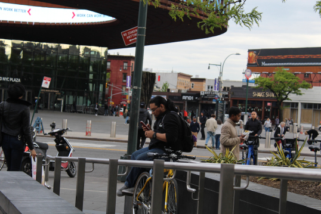

The Jones Rivalry Over, What's Next For Daniel Cormier?
June 24, 2017 by Ricardo Montero, Omer Beydili, Kate Flynn, and Koi Germany

Fifty-four free tickets a month. That’s how many were promised to Brooklyn residents in 2005 in exchange for building the Barclays Center.
That included tickets to concerts, performances, and of course, home games for the Brooklyn Nets. But it has been 12 years and besides tickets to concerts and games, there is little progress or clear evidence of everything else that was promised.
Forest City Ratner, the Brooklyn-based developer that spearheaded Atlantic Yards and Barclays Center, promised a number of benefits to the Brooklyn community. In addition to the tickets, FCR pledged to build parks, a healthcare center, affordable housing and create jobs for locals. They even promised a meditation room. However, on a recent visit to the Barclays Center during a Nets game, one of our reporters noted that the meditation room, a place of respite from the madness of game day, was locked.
Excitement was palpable at a recent sold-out Nets home game in April. Over seventeen thousand fans packed the arena and vendors did brisk business. It was an unseasonably warm Spring afternoon and the smell of popcorn and hotdogs filled the concourse as Nets fans cheered their team to victory. But how many of these cheering fans were there for free?
According to the Barclays Center’s website, the arena hosts over 150 events a year, and with the capacity to sell over 2.5 million tickets per year, just 648 of those tickets would be given out for free. The tickets include 50 upper bowl seats, 4 lower bowl seats, and a luxury suite.
However, the free tickets are given out through a lottery on Facebook, and the direct benefits promised to the community such as the public parks, the school and the health center, are still a vague bundle of half-met promises that have taken more than a decade to materialize.
Pedro Martinez has been living in the neighborhood for most of his 26 years. When asked what he knew of the benefits, Martinez grimaced. “I haven’t heard of any parks or any schools or anything,” he said as he waited for the B45 bus in front of the Barclays Center. “Free tickets? Where do you see that being marketed around here?”
The only thing ensuring Martinez that these promises will be kept is the community benefits agreement, a written pact between developers and community members to grant certain concessions in exchange for building in the neighborhood.
Forest City Ratner sought to erect the Atlantic Yards development within a footprint containing a number of community businesses and residences, requiring that they vacate in order for the project to be completed. To this end, the developer proceeded with efforts to label certain areas within the footprint as “blighted.” This made the project seem like it was trying to save a neglected urban area, thereby paving the way without a struggle.
Instead, construction was met by opposition from community groups and local advocates who argued that the building of the arena offered no substantial benefit to area residents.
In a press release from 2004, the spokesman for the Develop Don’t Destroy community group, Daniel Goldstein, said “No community input or dialogue, no facts to back up his assertions about the plan’s supposed benefits, no public accountability — and now no dissent. They might as well call the team the Brooklyn Nyets.” Goldstein even came to describe the developers tactics as a “deceptive, destructive, anti-democratic plan on the people of Brooklyn.”
However, some in support of the project, including prominent Brooklyn clergyman Reverend Dr. Herbert Daughtry, touted the benefits of transforming the “long-neglected, rodent-infested, garbage-strewn strip of geography into a modern oasis of splendid residential and commercial dwellings.”
In order to gain community support, FCR drafted their own community benefits agreement, including an agreement to hire an independent compliance monitor in charge of making sure that the promises were kept. The compliance monitor was never hired, making filing grievances all but impossible. Nevertheless, Ratner still managed to convince some locals to support the project.
“For the people that lived around here, [the Barclays Center] wasn’t a good idea,” said longtime Brooklyn resident Renée Ahmed, 49, sitting on one of the benches in front of the main entrance to the arena. Ahmed said that although building Pacific Park cost people their homes, “It’s worth it because it brings shows and games. It’s good for the community. It brings entertainment.”
The agreement additionally promises, “Approximately six acres of open space for use by the public free of charge.” On a recent visit to the Pacific Park site, no indication of the promised six acres of park space was evident. Maeri Ferguson, a spokeswoman for the New York City Parks Department, said via email that there has been no communication between the department and
Greenland Forest City Partners and that NYC Parks has no involvement with the project. Although as many as five residential buildings were completed or are under construction, there are few signs of other amenities promised to the community.

Sharon Daughtry, daughter of the Reverend Herbert Daughtry, is executive director of the Downtown Brooklyn Neighborhood Alliance, one of the community groups that was a signatory on the benefits agreement. Daughtry suggested that protesters against the development are to be blamed for the lack of progress. “They kept filing injunctions and held up the process for almost seven years. It really was just a waste of time,” she said in a phone interview.
The organization was founded with $50,000 in seed money from FCR, according to James P. Stuckey, Forest City Ratner’s executive vice president for development, in an interview with the New York Times. It was tasked with coordinating the construction of the community health care center and distribution of the free tickets.
Stating that the building and space for the health care center are ready, Daughtry asserted that, “Within two weeks we should be able to sign the papers with the health care provider.” When pressed on who the provider of the health care would be, she demurred, offering only that she anticipates a fall opening for the center.
She took a similar stance on the park space, noting that the DBNA was in the process of choosing a council in connection with the management of park-related issues.
While the parks and the health center are, ostensibly, in early development as of this year, other promises such as a meditation room inside the arena and the building of a school have been more promptly kept, for the most part.
According to the benefits agreement, the school originally promised by FCR was supposed to be a trade high school for construction management training, but it was unclear where the location would be and whether it would be publicly or privately funded. It will now be a public middle school with 616 seats at 664 Pacific St., as confirmed by the Department of Education in January 2016. “The new school will directly address needs voiced by the community and there will be ongoing opportunities for public discourse as we move forward with plans,” said DOE spokeswoman, Toya Holness, to DNAinfo.
Nevertheless, the size of the school has already been called into question. Assemblymember Jo Anne Simon, who represents the district where the school will be built, said that 616 seats are “likely not going to be enough,” and that the need for more seats is already “apparent even without the [promised] housing that is expected at Atlantic Yards.”
The Barclays Center website states that Barclays Center is “one of the most popular arenas in the world, ranked top five globally in 2015 for gross revenue and attendance by Billboard and Venues Today.”
City Council member Stephen Levin, whose district contains part of the development area, agrees that the arena has been an economic boon for the neighborhood.
“The community has seen economic benefits from the building of the Barclay’s Center,” he said in an email, adding, “When other factors are taken into account, such as indirect business generated by the arena, the full economic activity generated by the Barclays Center was $251 million.”
Steve Murray, 30, who works at Versailles clothing store next to Barclays, said “This used to just be railyards and people wouldn’t come down here, but it’s good for business.” Even though Murray said that the development of Pacific Park has gentrified the area, “it’s been good because it brings people that otherwise would have never come here before.”
However, unbeknownst to Murray and most area locals, are many of promises made and written into the CBA by the developer in order to convince the community to support the project. While an increase in revenue for local businesses, the success of Barclays Center, the construction of new housing, a meditation room, free tickets and plans for a new middle school are all measurable benefits, each promise kept has come at a price.
Whether it’s a lack of seats at the middle school, no space to build a park, fewer affordable housing units than originally promised or someone to unlock the meditation room, Forest City Ratner remains to fulfill all of its promises to Brooklyn.
For the time being, it is up to the recipients of the free tickets to enjoy watching the team with the worst record in the NBA, and assure Brooklyn locals that this was all worth it.